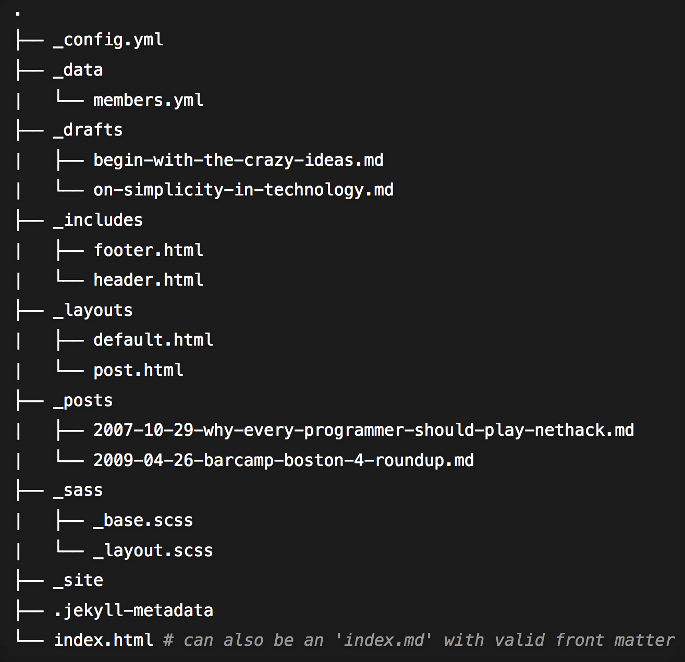

GitHub Pages and Jekyll
A little reminder of how HTML and CSS works …
Download Oxygen Editor (ask for a trial license).
Exercise 1: Create an HTML document and a CSS file At the end, you can try this template: Template.zip
Jekyll.
Structure of a Jekyll Directory structure:

In class we are going to follow this tutorial. So far, you have already done Steps 1 - 3, so you can go straight to index.html and modify accordingly:
Languages needed to work with Jekyll:
- HTML & CSS
- Markdown
- Yml
- Liquid
- Javascritp (not always)
Other Tutorials:
- Amanda Visconti. 2016. “Building a static website with Jekyll and GitHub Pages.”
- [In Spanish:] S. Allés-Torrent. 2016. “Crear una edición mínima con Jekyll y GitHub Pages”
Other resources:
- “Markdown and GitHub. First Steps Toward learning Modern Digital Practices for Sustainable and Shareable Research””.. WhatEvery1Says Web Resources, January 26, 2018.